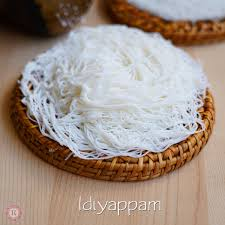

Idiyappam Recipe

A south Indian Breakfast dish
Idiyappam, also known as string hoppers, is a traditional South Indian dish made from rice flour.
It is a popular breakfast or dinner option, often served with coconut milk and sweetened with jaggery or sugar.
Here's a simple recipe to make idiyappam at home.
Ingredients:
- Rice flour (roasted): 2 cups
- Water: 2 ½ cups (adjust as needed)
- Salt: ½ tsp
- Oil: 1 tsp (optional)
Steps:
Prepare the dough
- Heat water
- Mix dough
- Cool slightly
Shape the idiyappam
- Use an idiyappam press
- Prepare the steamer
- Form strings
Steam the Idiyappam
- Steam cook
- Cool and serve